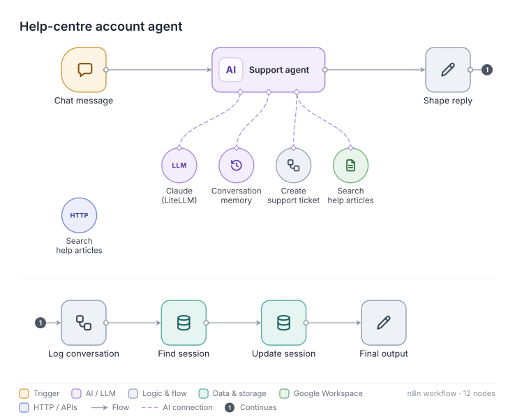

Case study · Cabify Spain · Mar to Sep 2026
CabiBot · Help Center AI Agent
Riders who cannot log in cannot use the app to ask for help, so they end up in the public Help Center. CabiBot sits there. It is limited on purpose to sign-in and registration problems: it searches the help articles, asks only for the minimum it needs, solves what it can and hands the rest to a person with everything already collected.
11,818 conversationsn8n automation
11,818
Help Center conversations handled so far
86%
of chats in the first week solved without a person
48 h
window in which a second ticket for the same rider is blocked
12
nodes: small on purpose
CB
CabiBotHelp Center · account access
I can't log in, the code never arrives
tool · search_articles("verification code not received")
Sorry about that. Two things usually fix it: check that your number includes the country code, and wait 60 seconds before asking for a new code.
Article · I don't receive the SMS code
Still nothing, and I changed phone last week
Then your account is probably still linked to the old number. I can ask the team to move it. Which email is the account under?
name@example.com
tool · create_ticket(category="login", phone_change=true)
Done. I've opened a ticket with your email and the phone change. You'll get an answer by email, usually within a day.
Ticket created · login / phone change
How it works
- A narrow scope, stated in the prompt. An 18,700-character prompt with explicit rules against inventing answers, the list of topics it may handle and what to say for everything else.
- Two tools. A search over help-centre articles, and a ticket tool that sends the category and the data the rider already gave, so the support agent does not have to ask again.
- Guards around the ticket. A strict filter for what may become a ticket, a rule that blocks a second ticket for the same rider within 48 hours, and a blocklist of disposable email domains.
- Memory per session in Redis, and a log of every conversation for review.

Cost and caching
After the fix described in LLM cost control, CabiBot became the largest LLM cost on our team key, for a simple reason: a long, stable system prompt resent on every message. That is exactly the case prompt caching is for, and CabiBot was the first agent to get it once the company's n8n model node exposed it.
Results
- 11,818 conversations handled since launch.
- 86% of the chats in the first week were solved without handing over to a person.
- Next step: the same agent on the app's login screen, where the problem actually starts.
What I learned
- A small agent with a narrow scope and two tools is easier to trust than a big one that can do everything.
- The ticket is part of the product. A handover with the data already collected is what makes the 14% that need a person faster too.